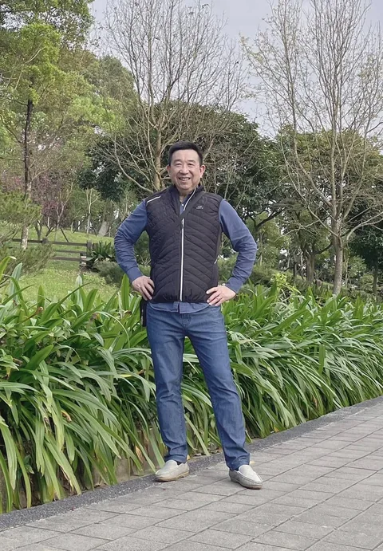
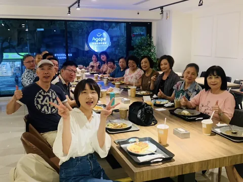
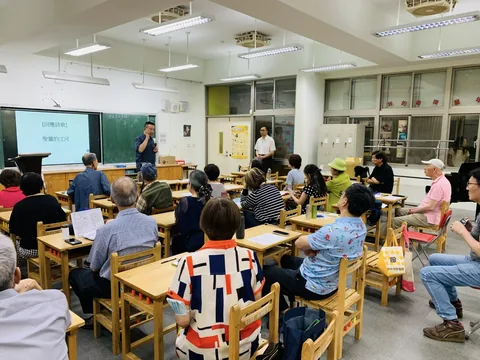
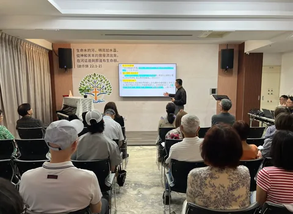
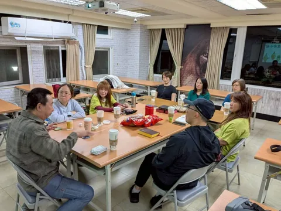

成全聖徒
在神的話語中扎根，
活出門徒的生命。
CHRIST OUR HEAD · MAKING DISCIPLES
跟隨主，遵行主道，承接大使命。
教會是基督的身體。
我們以耶穌基督為中心，以神的話語為根基，
透過門徒訓練與彼此配搭，學習遵行主的教導，
在生活中活出新生命，並裝備人繼續帶領門徒。
「又將萬有服在他的腳下，以弗所書 1:22
使他為教會作萬有之首。」
OUR CALLING & VISION
耶穌基督是教會的元首，祂呼召我們跟隨祂、使萬民作祂的門徒。
透過真理的教導、生命的操練與門徒訓練，預備合神心意、合神所用的器皿。
在神的話語中扎根，
活出門徒的生命。
在真理、信心與恩賜中，
預備自己，彼此配搭。
回應主的差遣，
將福音帶進生活與人群。
使萬民作主的門徒，
一同承接大使命。
摘自《基甸勇士裝備中心・異象》
盼望透過真理的教導、生命的互動、宣教的挑戰、與門訓的責任，來塑造合神心意、合神所用的器皿，成全神在你生命中的呼召，進入有果效的團隊服事。
面對二十一世紀福音大使命的挑戰，我在靈裡時常聽見聖靈急促的號角聲，彷彿祂正在調動聚集一大群主基督的精兵；一群充滿異象，肯受裝備，剛強壯膽的福音使者。在世界各地，我們看見神復興的火正在燃燒許多信徒的心，激勵神的兒女投入這個得勝的行列。在這榮耀的水流裡，我深信華人信徒被神托負要接下福音大使命最後一棒的重責。
因此，我們深感一套創新、實用、全備、有系統的基督精兵訓練課程是極需要的。為裝備在社會各階層的信徒成為能結果子的福音使者、有生活見證的耶穌門徒、具戰鬥力的基督精兵。
本中心就是為了回應神的托負而成立。盼望透過真理的教導、生命的互動、宣教的挑戰、與門訓的責任，來塑造合神心意、合神所用的器皿，成全神在你生命中的呼召，進入有果效的團隊服事。
盼望神的靈也感動你，呼召你投入這精兵運動的水流，立志將自己的生命奉獻在神最榮耀、最有價值的永世國度裡，同心打那主再來之前最美好的一仗。
從信靠主到持續跟隨主，在日常生活中遵行祂的話，使生命與所蒙的恩相稱。
「所以，你們要去，使萬民作我的門徒，奉父、子、聖靈的名給他們施洗。」
馬太福音 28:19 · 大使命經文 28:18–20
FOLLOW JESUS · MAKE DISCIPLES
大使命的核心，是「使萬民作主的門徒」。
從信靠耶穌開始，持續學習主的話、遵行主的教導，並帶領更多人一同跟隨祂。
「凡我所吩咐你們的，都教訓他們遵守，我就常與你們同在，直到世界的末了。」馬太福音 28:20
藉著讀經、禱告與真理裝備認識主，將所領受的教導實踐在每天的選擇中。
在順服、愛與捨己中被主塑造，使信仰與生活一致，在家庭與職場為主作見證。
在小組與教會生活中彼此相愛、互相扶持，操練恩賜，一同參與服事。
回應主的差遣，傳揚福音，陪伴人跟隨耶穌，將所學交託能繼續教導別人的人。
門徒生命的操練，貫穿聖經教導、小組生活、團隊服事與福音行動。與我們聯繫，認識裝備與小組 →

EQUIPPING DISCIPLES · PASTORAL MINISTRY
PASTOR FRANK S. HWANG
以聖經教導裝備門徒，
陪伴人跟隨耶穌、回應主的呼召。
黃牧師於美國取得物理化學碩士與高分子化學博士學位。1994 年，在宣教大會中蒙召全時間事奉，隨後投入植堂、牧養、聖經教導與門徒訓練。
他心中的負擔，是裝備信徒領袖、建造聖經藍圖的教會，並承接宣教使命；透過全備、活潑、平衡的聖經教導，幫助人將真理活在日常生活中。
OUR STORY · HIS FAITHFULNESS
從咖啡館裡的一次相聚，到一同走進新堂；
聚會的地方改變，神的帶領始終不變。


「他要像一棵樹栽在溪水旁，
按時候結果子，葉子也不枯乾。」詩篇 1:3
2024 年 9 月 21 日，在 Agape 愛加倍咖啡餐館開始小組聚會。之後相聚於民視圓桌、幸福餐坊，並在湖南里里民活動中心展開每週六的小組生活。
2 月 16 日舉行第一次主日崇拜；3 月 2 日，弟兄姊妹一同領受第一次聖餐。
自 2025 年 5 月 4 日起，在頭湖國小音樂教室舉行主日崇拜。同年 5 月申請成立教會，8 月按立執事，並展開小組訓練。
2025 年 11 月，香柏樹、葡萄樹、木瓜樹三大小組成立；在敬拜、查經與彼此關懷中持續成長。
5 月於宜蘭利澤簡活動中心退修。7 至 8 月，弟兄姊妹同心投入新堂整理與裝修；8 月 30 日，完成頭湖國小最後一次主日崇拜。
在新的聚會空間獻上敬拜與感恩。願生命樹成為社區的祝福、福音的管道，讓更多人在基督裡同享豐盛生命。
LIFE TOGETHER
在教會與小組中，一起操練門徒的生活。
透過敬拜、查經、禱告與彼此守望，學習遵行耶穌的教導。

在相聚與分享中，彼此扶持，一同扎根。
連結於主，在彼此相愛中結出生命的果子。

分享恩典，彼此守望，讓信仰走進生活。
想認識小組、參與聚會或進一步了解信仰，歡迎透過教會 Facebook 與我們聯繫。
THE WORD · DISCIPLESHIP · DAILY LIFE
透過主日信息持續領受神的話語，
帶著禱告聆聽，帶著回應實踐。
更多主日信息與影音，請前往教會 YouTube 頻道。
ONE BODY · ONE MISSION
在主耶穌基督的帶領下，連結地方教會與基甸勇士的裝備、宣教、關懷及出版事工，回應同一個呼召。
認識事工的連結主耶穌基督為一切事工組織的元首。生命樹教會總會由牧師團管理，圖中連結林口生命樹教會與基甸勇士。林口生命樹教會設有執事會；基甸勇士包含宣教中心、裝備學院、關懷事工與出版社。圖中另呈現分會及未來事工擴展的規劃。
YOU ARE WELCOME HERE
無論你正在認識信仰，或渴望在基督裡繼續成長，都歡迎你來。讓我們一起敬拜、一起禱告，在神的愛中同行。
主日崇拜 · SUNDAY WORSHIP
生命樹基督教會
244 新北市林口區文化二路一段 571-5 號 1 樓
查看下方 Google 地圖 ↓初次來訪、想加入小組或了解最新聚會資訊，歡迎透過教會 Facebook 與我們聯繫。
前往教會 Facebook